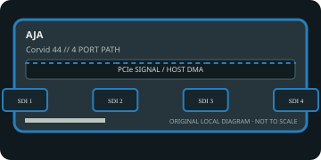

[ INDIVIDUAL COMPONENT // EXPANSION CARDS ]
AJA Corvid 44
Four-link SDI PCIe I/O board for multi-channel capture and playback; distinct from the Corvid 44 12G SKU. This static reference distinguishes documented card I/O from host software, codecs, and external signal paths.

IDENTIFICATION: Match the exact SKU, model marking, part number, board revision, bracket and connector layout to manufacturer documentation. Similar family names do not imply interchangeable ports, firmware or support.
Capture, playback and compatibility specifications
| Exact model / SKU | Corvid 44 — verify the marking and revision on the physical card. |
|---|---|
| PCI/PCIe bus and lanes | PCI Express x8; provide eight lanes at a suitable PCIe generation. Verify the exact board revision because AJA has separate Corvid 44 variants, including the separately cataloged 12G model. |
| Digital video inputs | Four bidirectional SDI BNC links are configurable for capture or playback; embedded audio, ancillary data and timecode support depend on the active SDI mode and application. |
| Analog ports | No analog video I/O; any reference/sync connection is for timing and does not accept analog picture. |
| Input formats | SD/HD and multi-link 2K/4K/UltraHD workflows by combining SDI links; 3G-SDI limits and frame rates depend on generation and channel mapping. Use the Corvid 44 (non-12G) data sheet, not the 12G variant’s limits. |
| Output formats and connectors | Any of the four SDI links may be configured as output for supported playback; exact simultaneous channel count/raster is constrained by PCIe bandwidth, SDI generation and SDK mode. |
| Encoding and driver model | Uncompressed SDI frame transport through AJA SDK; no independent compressed file encoder is advertised. Encoding is application-side. |
| Operating-system compatibility | AJA SDK/Desktop Software for Windows/Linux and supported OEM software; OS versions depend on the SDK branch. This legacy Corvid 44 is not automatically supported by the newest release—check the exact model support matrix. |
| Software | AJA Control Panel and AJA SDK, plus compatible broadcast, playout or custom software. |
| Power and cooling | Consult the card revision’s official installation document for slot/auxiliary power and cooling; the linked legacy sheet does not provide a single reliable maximum for all revisions. Reserve airflow for sustained multi-link operation. |
| Firmware caveat | Use firmware and SDK packages explicitly designated for the standard Corvid 44; the separately named Corvid 44 12G has different hardware/firmware. Preserve release notes and avoid interrupted update/initialization. |
Integration notes and limitations
- Do not transfer 12G/8K figures from the Corvid 44 12G record to this model. Confirm SDI level, link aggregation, reference, board revision and application support before commissioning.
- Verify physical slot fit, PCIe lane wiring, BIOS/UEFI enumeration, host bandwidth and driver support together; a longer slot does not guarantee the electrical width the card needs.
- Record the board revision, firmware/driver versions, OS build, application, signal standard, source timing and tested pixel format as part of commissioning.
- Distinguish a video transport/pixel format from a compressed file codec. Unless the manufacturer explicitly states hardware encoding, codec creation and recording are host-application tasks.
Manufacturer sources and support
- AJA — Corvid 44 product and support informationManufacturer source; consult the exact model/revision and software-release notes before installation.
- AJA — Corvid 44 manufacturer specification sheetManufacturer source; consult the exact model/revision and software-release notes before installation.
Product revisions, driver support and application integrations change over time; manufacturer documentation for the exact card takes precedence over generic family-level guidance.